«Энсайн» · Кейс для блога · IT
Кейс «Энсайна» об объединении 14 сайтов ВДНХ в единый портал
В 2025 году писала для «Энсайна» — московского IT-интегратора, который с 2004 года делает порталы и highload-сервисы для госзаказчиков и бизнеса. Компании нужно было превратить хабровские статьи разработчиков в кейсы для своего блога. Подготовила два кейса: об объединении 14 сайтов ВДНХ в единый портал и о переезде портала ГИСП с «Битрикса» на Python.
«Энсайн»nsign.ru
«Энсайн» — московский IT-интегратор, работает с 2004 года. Разрабатывает сайты, корпоративные порталы и highload-сервисы на PHP и Python, ведёт сложные цифровые проекты как генподрядчик для органов власти, госкорпораций и бизнеса. В команде больше 50 штатных специалистов.
- Площадка
- Блог nsign.ru
- Формат
- Рерайт хабровской статьи в кейс для блога компании
- Год
- 2025
Задача
Показать CIO и руководителям цифровых проектов, что «Энсайн» справляется с порталами масштаба ВДНХ, и привести их к заявке на разработку. Кейс работает на этапе выбора подрядчика и строит доверие через конкретные решения.
Решение
Сократила авторский текст с листингами кода до кейса «проблема, архитектура, решения, цифры, отзыв». Микросервисы, гибридный SSR и трёхуровневый кэш объяснила через пользу для заказчика, термины вынесла во врезки, метрики свела в таблицу, ключи вписала.
Результат
Кейс вышел в блоге nsign.ru с врезкой «Коротко о проекте», таблицей метрик и отзывом советника АО «ВДНХ». После него заказчик отдал в работу второй кейс, а в портфолио-версию к десяти скриншотам добавлены две инфографики.
Кейс ВДНХ: как мы объединили 14 сайтов в единый портал и ускорили отклик в 15 раз
ВДНХ — это 325 гектаров павильонов, парков, аллей и скульптур, 49 объектов культурного наследия, музеи, лектории, выставки и сотни событий. Только летом 2024 года выставку посетили 9 млн гостей. Это один из крупнейших музейно-выставочных и рекреационных комплексов в мире.
При этом до 2025 года цифровая экосистема ВДНХ состояла из 14 разрозненных сайтов, и каждый жил своей жизнью. Посетителям было неудобно, сотрудникам — трудоёмко, а комплексу такая разобщённость мешала развиваться.
Нашей задачей была разработка единого корпоративного портала, который объединит все ресурсы, ускорит работу и упростит управление контентом. Рассказываем, как мы собрали разрозненные сайты в современную платформу, ускорили отклик бэкенда в 15 раз и на 40% улучшили скорость отрисовки основного контента.
Коротко о проекте
- Заказчик: ВДНХ, Москва
- Задача: объединить 14 сайтов в один портал с общей базой данных и афишей
- Стек: Laravel, Nuxt.js, Docker Swarm, Redis, Memcached, Nginx
- Срок: 6 месяцев, включая дизайн, согласования и документацию
- Главный результат: время отклика бэкенда — 62 мс вместо 900 мс
Проблемы исходной системы
Заказчик хотел получить современную платформу с понятным интерфейсом, встроенными инструментами для SEO, высокой производительностью и запасом для роста аудитории. Проект должен был не только решить текущие проблемы, но и стать основой для новых цифровых проектов.
До старта проекта разделы ВДНХ — от музея космонавтики до лектория — существовали на отдельных сайтах на CMS «1С-Битрикс: Управление сайтом», каждый со своим дизайном и логикой работы. Переходя из раздела в раздел, пользователь каждый раз попадал в совершенно новый интерфейс.
Контент-менеджеры тратили часы на то, чтобы продублировать одну и ту же новость или событие в нескольких системах. Не хватало и производительности: при пиковых нагрузках, например во время крупных выставок, время отклика бэкенда доходило до 900 мс, и пользователи чаще уходили с сайта.
Единой базы данных и централизованной мультиязычности тоже не было: для каждого языка приходилось создавать отдельную версию сайта. Разрозненная инфраструктура тормозила развитие ВДНХ как цифрового бренда и была неудобна посетителям.
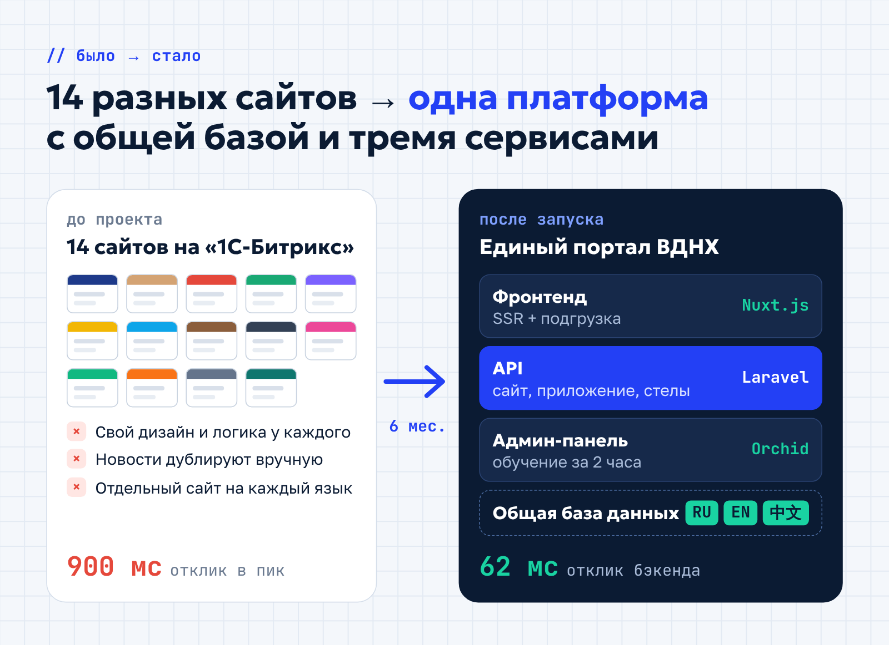
Чтобы решить эти проблемы, мы разработали единый интернет-портал, который объединил 14 сайтов в одну систему на связке Laravel (бэкенд) и Nuxt.js (фронтенд). С таким стеком мы уложились в 6 месяцев и не пожертвовали ни производительностью, ни гибкостью.
Почему Laravel и Nuxt.js
Связку предложила сама команда ВДНХ, и у этого выбора было три сильных аргумента.
Laravel дал надёжный бэкенд с API для внешних приложений: мобильного приложения и информационных стел ВДНХ. Nuxt.js с серверным рендерингом (SSR) ускорил загрузку страниц и помог SEO: поисковые системы сразу получают готовый HTML-код. Наконец, команда заказчика уже работала с Laravel и Vue.js, поэтому быстро освоилась в новой системе.
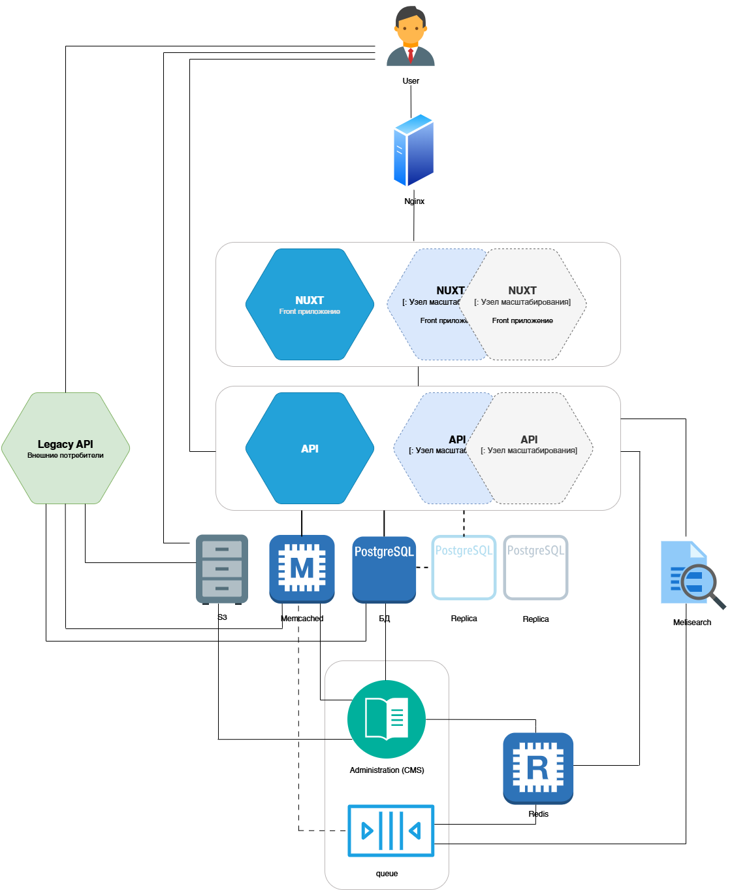
На схеме видно главное: каждый слой можно наращивать отдельно, не трогая остальные. Пунктиром отмечены узлы, которые подключаются при росте нагрузки, — за счёт них портал и выдерживает пики посещаемости.
Микросервисная архитектура для масштабируемости
Мы разделили систему на три независимых микросервиса: API, фронтенд и админ-панель. Так каждый компонент масштабируется отдельно: например, во время массовых мероприятий можно добавить мощностей только API. Контейнерами управляет Docker Swarm — он распределяет нагрузку по алгоритму Round Robin, поэтому портал работает стабильно даже при резком росте трафика.
Админ-панель на Laravel Orchid получилась настолько удобной, что обучение контент-менеджеров заняло всего 2 часа, а разработчики заказчика начали сами дорабатывать её уже через неделю. Хотите так же? Оставьте заявку на разработку или модернизацию веб-портала.
Гибридный рендеринг и кэширование
Чтобы портал ВДНХ работал быстро, мы внедрили гибридный рендеринг: серверный рендеринг (SSR) в сочетании с клиентской подгрузкой. SSR сразу отдаёт ключевые элементы страницы, сокращает время загрузки и помогает поисковикам быстрее индексировать готовый HTML. Динамические элементы — фильтры и афиша — подгружаются асинхронно через REST API: интерфейс остаётся живым, как у SPA-приложения, а сервер не перегружается.
Почему гибридный рендеринг полезен для SEO? Сервер формирует HTML заранее, и поисковый робот сразу видит весь контент страницы — это повышает её релевантность в выдаче. Асинхронная подгрузка динамических данных снижает процент отказов и улучшает поведенческие метрики.
Вторым шагом стало многоуровневое кэширование. Nginx хранит готовые SSR-страницы, Memcached кэширует запросы к базе данных, а Redis с сортированными множествами (Sorted Sets) ускоряет работу с динамическими данными. Тегированное кэширование в PHP-бэкенде обновляет только те данные, которые изменились, поэтому информация всегда актуальна.
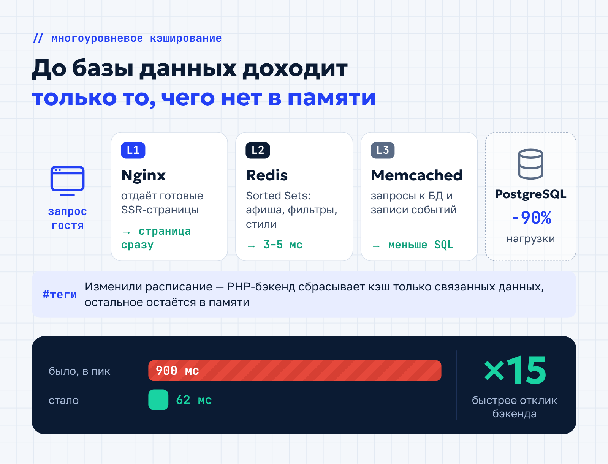
В результате портал остался на той же инфраструктуре, но выдерживает в разы больше посетителей. Время до первого байта (TTFB) снизилось, задержки при массовых запросах исчезли, а показатель LCP (Largest Contentful Paint) — скорость отрисовки основного контента — улучшился на 40%.
Быстрые фильтры для поиска мероприятий
В информационном портале ВДНХ собраны данные о сотнях мероприятий, поэтому поиск по сложным фильтрам — категориям, датам, стоимости — должен работать мгновенно. Прямые запросы к базе данных с этим не справлялись: при большом числе параметров они становились слишком тяжёлыми.
Мы перенесли фильтрацию в Redis Sorted Sets: в памяти хранятся упорядоченные ID событий для каждой категории и тега, и подборка собирается пересечением множеств. Запрос вроде «бесплатные концерты для детей в выходные» обрабатывается за 3–5 мс. Отдельные записи мероприятий кэширует Memcached, и в итоге нагрузка на базу данных сократилась на 90%.
Производительность мы проверили нагрузочным тестированием в JMeter: 100 параллельных потоков, каждый повторял запрос 100 раз, всего 10 000 обращений к главной странице.
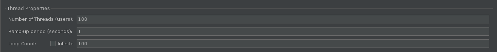
Фронтенд на Nuxt выдержал этот поток со средним временем ответа 61 мс и пропускной способностью около 1380 запросов в секунду — без единой ошибки.
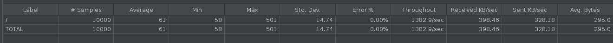
API, который обращается к данным, отвечал в среднем за 199 мс и обрабатывал около 470 запросов в секунду — тоже с нулевым процентом ошибок.
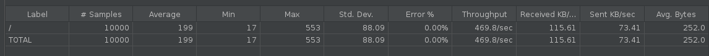
Эти цифры показывают запас прочности: даже при наплыве посетителей во время крупных событий портал отвечает быстро и не теряет запросы.
Автоматизация обновлений через CI/CD
Сборку, тестирование и развёртывание веб-сервиса важно автоматизировать с самого начала. Для портала мы настроили CI/CD на базе Gitea: система сама собирает код, запускает тесты с проверкой уязвимостей (Composer Audit и NPM Audit) и выкатывает изменения в продакшен. Если что-то идёт не так, Docker Swarm за несколько минут откатывает портал к стабильной версии.
Результат: путь от коммита до рабочего кода сократился до часа, и разработчики заняты новыми функциями, а не рутиной.
Единый стиль с гибкой настройкой
Нам нужно было объединить 14 сервисов в один портал и при этом сохранить характер каждого направления. Мы сделали систему динамических цветовых схем: сервер сразу генерирует HTML с оформлением нужного раздела. Например, «Космос» получает тёмно-синюю палитру с анимацией звёзд, а «Лекторий» — бежевые тона с книжными иконками.
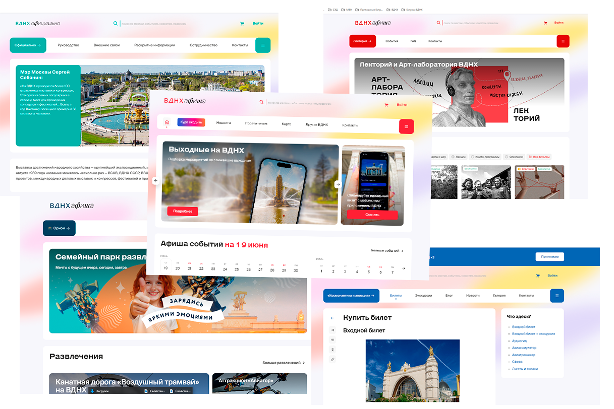
CSS-переменные встраиваются в HTML-каркас ещё на этапе SSR, поэтому проблема «мерцания стилей» исчезла: страница сразу открывается в правильном оформлении. Контент-менеджеры настраивают стили через админ-панель, а Redis кэширует их и ускоряет загрузку.
Благодаря модульной структуре страницы собираются из готовых блоков, а новые события или баннеры добавляются быстро. Если в вашей компании тоже разрослось несколько сайтов, посмотрите, как мы создаём веб-порталы и сервисы под задачи бизнеса — с той же модульной архитектурой и единой админкой.
Гибкий редактор для контент-менеджеров
Чтобы с контентом было удобно работать, мы внедрили конструктор страниц на базе Editor.js с drag-and-drop. Контент-менеджеры собирают страницу из блоков: текста, слайдеров, карт, афиш. Для базовых элементов хватило готовых плагинов Editor.js, а для событий и мест мы разработали собственный блок под задачи ВДНХ.
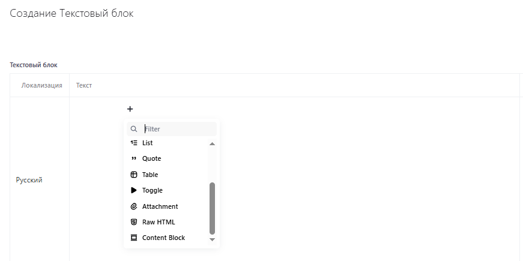
Единая база данных и настройки видимости решили давнюю проблему: новое событие автоматически появляется во всех связанных разделах. Дублировать ничего не нужно, а публикация занимает несколько минут.
Многоязычная поддержка
Для англоязычной и китайской версий портала мы отказались от стандартных систем локализации и сделали свой модуль с экспортом и импортом через Excel. Контент-менеджер выгружает элементы интерфейса — кнопки, пункты меню — в файл, вносит переводы и загружает обратно, а система сама расставляет их по местам.
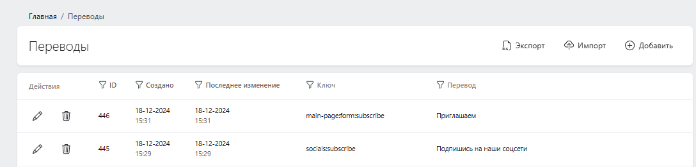
Если перевода для раздела нет, он просто не показывается в соответствующей языковой версии. Так на английской или китайской странице не появляются полупустые блоки.
Для самих материалов в карточке события есть три вкладки — русский, английский и китайский. Редактор может перевести текст сразу или вернуться к нему позже.
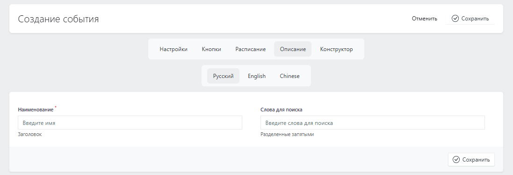
Так переводы получаются точными, работать с ними можно в удобном темпе, а иностранным гостям проще ориентироваться на портале.
Гибкое меню с обновлениями «на лету»
Навигационное меню мы вынесли в отдельный модуль, который работает через API. Контент-менеджеры в реальном времени меняют его структуру: добавляют временные разделы для акций или скрывают неактуальные пункты, не останавливая работу сайта. Благодаря SSR и кэшированию в Redis пользователи сразу видят изменения.
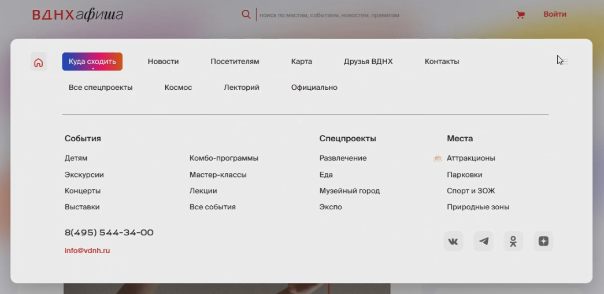
Временные разделы, например афиши отдельных мероприятий, автоматически исчезают из меню, когда истекает срок их действия.
Мобильная оптимизация для 85% трафика
С мобильных устройств на портал заходят 85% пользователей, поэтому скорости работы на смартфонах мы уделили особое внимание. Работали в трёх направлениях.
- Ленивая загрузка (lazy-loading): изображения и компоненты подгружаются только при прокрутке.
- Облегчённая версия для смартфонов: сервер заранее определяет тип устройства и отдаёт страницу без тяжёлых десктопных элементов.
- Nuxt PWA: сервис-воркеры кэшируют ключевые данные, и афишу или карту можно посмотреть даже без интернета.
Отдельно мы прогнали портал через PageSpeed Insights и убрали всё лишнее: неиспользуемые стили, скрипты и автоматическую загрузку компонентов.
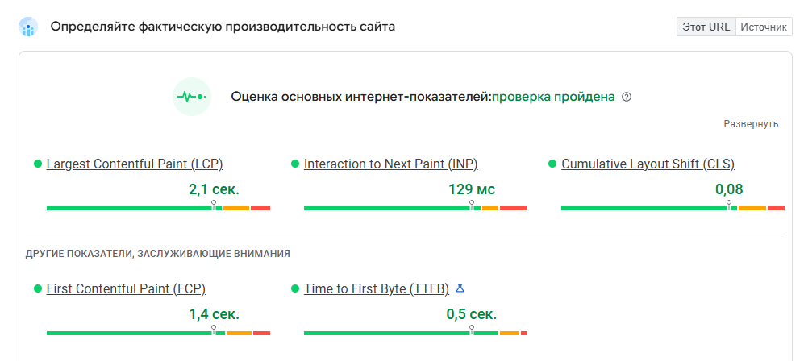
В итоге первый экран загружается менее чем за 2 секунды даже при слабом мобильном интернете.
Экономия на интеграции с 2GIS
Интерактивная карта портала работает на API 2GIS, где тарифицируется каждый запрос. Чтобы снизить затраты, мы пересчитываем данные о маршрутах не в реальном времени, а только после того, как контент-менеджер закончит редактирование. Базовая информация о локациях — ID, иконки, названия — кэшируется на бэкенде.
Ещё одна оптимизация связана с ограничениями 2GIS на маршруты для удалённых точек. Если пользователь находится далеко от ВДНХ, система автоматически переключается на Яндекс Карты, и это дополнительно сокращает расходы.
Документация API через Swagger
Чтобы упростить сопровождение и онбординг разработчиков, мы внедрили Swagger: он автоматически генерирует интерактивную документацию API по аннотациям в Laravel. Это помогло бесшовно подключить к новому порталу существующие приложения ВДНХ — мобильное приложение и информационные стелы — без их доработки.
Результаты в цифрах
Объединив 14 сайтов в единый портал, мы решили не только технические, но и бизнес-задачи: посетителям стало удобнее, поддержка подешевела, а у комплекса появилась основа для роста. Вот как изменились ключевые показатели.
| Показатель | Результат |
|---|---|
| Время отклика бэкенда | 62 мс вместо 900 мс — в 15 раз быстрее |
| LCP (отрисовка основного контента) | улучшение на 40% |
| Первый экран (Lighthouse) | менее 2 секунд даже при пиковой нагрузке |
| Поиск по фильтрам афиши | 3–5 мс |
| Нагрузка на базу данных | минус 90% |
| Обучение контент-менеджеров | 2 часа |
| От коммита до продакшена | до 1 часа |
Портал стал устойчивым к пиковым нагрузкам и удобным как для посетителей, так и для команды, которая его ведёт.
Итоги
Единый портал объединил разрозненные ресурсы ВДНХ, упростил навигацию и работу с контентом. Благодаря масштабируемой архитектуре портал выдерживает рост аудитории без апгрейда серверов, SEO-оптимизация повысила видимость в поиске, а удобная админ-панель сократила обучение сотрудников до двух часов.
После запуска сайт окончательно переехал с бета-домена на основной. Контент-менеджеры и штатные разработчики ВДНХ полностью взяли его в работу, а отзывы пользователей в основном положительные.
«Новая платформа стала мощным инструментом для оптимизации внутренних процессов и повышения качества взаимодействия с посетителями. Её производительность и гибкость полностью соответствуют нашим стратегическим целям».
— Дмитрий Бухвалов, советник по цифровому развитию АО «ВДНХ»
Проект ВДНХ показал: продуманная разработка информационных порталов заметно улучшает цифровую инфраструктуру и помогает бизнесу работать эффективнее.
Если цифровая инфраструктура вашей компании тоже разрослась и мешает работать, мы поможем её упорядочить. Мы разрабатываем надёжные веб-порталы и сервисы под ключ: с гарантией сроков, прозрачной архитектурой и поддержкой после запуска. Узнать больше о разработке веб-порталов.